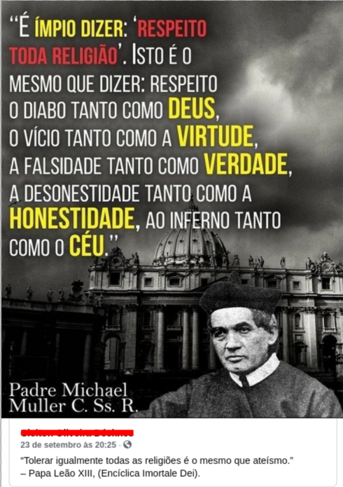

|
|
Tolerância religiosa |
|
Marcelo |

Esta postagem foi feita em um grupo dedicado ao estudo da doutrina católica, embora seja difícil encontrar lá tanto o estudo quanto a doutrina católica. Embora a minha impressão não seja baseada em uma análise criteriosa sobre as postagens, a maioria delas é apenas uma distorção conservadora da doutrina da Igreja, exceto as postagens devocionais e as de "coach espiritual" (no estilo "espere porque Deus logo vai te levantar"). O padre na imagem da postagem, Michael Muller, foi um padre falecido em 1899 que, aparentemente, era um reflexo fiel do pensamento da sua época (e, portanto, dificilmente faria postagens apoiando ideias descabidas de mais de cem anos atrás, se tivessem redes sociais naquela época), motivo pelo qual pouco importa o texto da foto ("É ímpio dizer 'respeito toda religião'. Isto é o mesmo que dizer 'respeito o diabo tanto como Deus, o vício tanto como a virtude, a falsidade tanto como verdade, a desonestidade tanto como a honestidade, ao inferno tanto como o céu'."), que não vale nem a pena correr atrás para verificar se ele disse isto mesmo do jeito que está ali. Mas, na mesma postagem, abaixo da foto dela, há uma citação de Leão XIII na encíclica Imortale Dei: "Tolerar igualmente todas as religiões é o mesmo que ateísmo". Parece que Leão XIII está defendendo, sob muitos argumentos, a liberdade da Igreja perante o Estado, ao mesmo tempo em que defende que o Estado está condenado à ruína se não incorporar a si mesmo os valores cristãos e não der ouvidos à Igreja ("parece" porque li por cima, apenas procurando a tal citação que iguala tolerância religiosa e ateísmo). Não é uma encíclica sobre a diversidade religiosa, sobre eucumenismo, nem nada: apenas o parágrafo 37 diz que "Relativamente à religião, pensar que é indiferente tenha ela formas disparatadas e contrárias equivale simplesmente a não querer nem escolher nem seguir qualquer delas. É o ateísmo menos o nome". O argumento de Leão XIII é que dizer que todas as religiões dão no mesmo é uma forma de ateísmo, e que então, dadas as diferenças entre elas, algumas estarão mais em conformidade com Deus do que outras; isto vai servir de embasamento, parece, para que no parágrafo seguinte ele defenda que liberdade de expressão não é o mesmo que dizer qualquer coisa irrestritamente. Em nenhum momento o papa diz "apenas a Igreja deve falar", mas fica implícito que, para ele, seria melhor calar quaisquer vozes contrárias à Igreja (mas de modo implícito, e não como uma determinação da encíclica). Por outro lado, no parágrafo 38 o papa aborda com mais de cem anos de antecedência a questão das fake news e do negacionismo, embora sem usar estes termos: "Se a inteligência adere as opiniões falsas, se a vontade escolhe o mal e a ele se apega, nem uma nem outra atinge a sua perfeição, ambas decaem da sua dignidade nativa e se corrompem.", embora fique claro que ele esteja falando sobre a Igreja apontar o único caminho correto para o céu, e não sobre vacinas e a terra plana (mas muito dificilmente ele seria contra vacinas e favorável à terra plana, eu acho). Mas não existe ao longo de todo o texto nenhuma defesa e nem qualquer legitimação da intolerância religiosa. Há a defesa da censura, é verdade, mas se até mesmo há menos de cinquenta anos atrás a censura era uma prática oficial no Brasil, às vésperas de 1900 (a encíclica é de 1885) ninguém acharia estranha esta ideia - até porque hoje se sabe que censurar não impede que as coisas sejam ditas mesmo assim. Embora a Igreja não possa ser isenta de críticas, de outro lado existe há séculos um grande ranço contra ela. E estes grupos conservadores, na tentativa de "salvar" a Igreja (quando na verdade estão tentando salvar apenas sua própria concepção de Igreja, e, de qualquer modo, quem salva é Cristo, e não o conservadorismo nem o progressismo), apenas alimentam este ranço, o que me dá a impressão de que reforçam mais as tentativas de destruir a Igreja do que de contribuir para mantê-la em pé. |
| ↵ |
| e-mail |
|
|